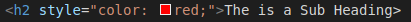

The Basics of CSS
What is CSS
CSS is the styling of the web page. You have some HTML code which states what content is going to be displayed e.g. how many paragraphs and headings there will be and what will be in them. You then use CSS to control how that content will look, for example, what color the text will be, where abouts images will be positions on the webpage etc.
How to link your CSS sheet to your HTML file:

- Create a style.css file
- In the head of the html file use the above command to link the two files together
Inline CSS (Style Attribute)
- Using the style="" html attribute
- You would use inline CSS when you only want to change a single element, for example, just one h2 heading and not the rest of the h2 headings
- An alternate way would be to give is a .class and define the styling in the main css style sheet
Using CSS inside your HTML Code (CSS block)
- This is known as a css block becuase it is a block of CSS code which lives inside the HTML document
- A CSS block must live inside the style brackets
The anatomy of a CSS Rule:

- Selector - This is where you select which Element or Class you want to target
- Property - This is a way in which you can style your CSS element. In this example color is the property where you can change the color of the text
- Property Value - This is where you set the value of the property, in this example: setting the text to red
- Declaration - Is a single rule within the CSS Rule. In this example, the declaration is color : red;
Additional notes for the CSS rule
- The rule must be encapsulated in-between two {curly brackets}
- The Property and the Property Value must be separated by a colon:
- Each Declaration must be separated by a semi-colon;
- To select multiple elements, use a comma in between, for example: p, li, h1
The different types of Selectors
| Selector Name | What Does it Select | Example |
|---|---|---|
| Element Selector | A specific |
P {} - Selects p | ID Selector | You can give a particular element an ID to target only that element. You cannot use the same ID twice on the same html page | #my-id - Selects p id="my-id" OR a id="my |
| Class Selector | You can give a particular element a specified class. More than one element can share that class | .my-id - Selects p class="my-id" AND h1 class="my-id" ECT |
| Attribute Selector | Selects the elements on that page with the specified attribute | img[src] - Selects img crs="myimage.png" NOT img |
| Pseudo-Class Selector | Selects specified elements, but only when in a specific state. For example: when a mouse hovers over a Hyperlink | a:hover - Selects a but only when the users mouse is hovering over the link |
Relative vs Absolute units for sizing elements
Read this page on the subject- There are two types of sizing units used to size a html element
- Absolute: This measurement is a fixed measurement based on a physical unit of measure
- Good if the size of the output window is known
- The size of text will not change if the user changed the text size
- In CSS use px (pixels)
- Relative: these units are relative to another length value
- This sizing is more dynamic as it will resize the text if the user changes the default browser text size
- Em is used. 1 em = 16px (the default browser text size)
- A stardard practice which should be used when designing a modern webpage:
- Set the body to font-size: 100%; and size everything else using em to avoid issues with old ie
Precendence of CSS
CSS reads CSS codes sequentially. This means that if two values of a particular HTML element conflict each other, one must take priority.
- From top being least priority:
- Element Selector
- .class selector
- #ID Selector
- Inline CSS (style="" attribute)
- !Important used at the end of a propety value
- NOTE! If there is a conflict between two of the same selector types, the CSS will use one which was read last (closest to the bottom of the code)
How to use Variables within CSS
We use variables within CSS to allow us to change the value of multiple property declarations within our CSS code. This means that we can just change the value of the variable instead of having to change 10 different properties throughout our code.
- To Create a Global variable we must store these within the :root so they can be see by other declarations within the CSS code:
- To use that variable to assign a certain poperty to the variables value:
- To create a fallback so the browser has a default color to use in case of a problem var(variable-name, black)
- To support older versions of IE (because they don’t support variables) create the same property before the variable declared property and give it a widely supported value
How to change the font using Google Fonts:

- Go to: Google Fonts and pick a font you like
- Click on Select this Style+
- Copy the two links as shows above and paste them in the head of your index.html
- Go to your style.css file and create a rule selecting html
- Copy the CSS rule as shown above and paste it in your style.css
All about Boxs in CSS
All element within HTML are in a box. It's your duty to style them boxes with CSS. There are three different areas within the box.

- Padding - This is the space around the content, in this case the text
- Border - This puts a border around the content and any padding
- Margin - The space around the outside of the border
Styling the Body
There are a few declarations which are commonly used to style the body of the page (This the container which encapsulates everything) therefore this box is the size of the browser window by default.
- Width - This sets the width of the body container, I have set it to auto so it is relative to the browser window
- Padding - Adds padding to the body container. I have set to Auto which I believe is 0 by default
- Margin - Set margin for the body container if needed. 0px for the top and bottom,(Here, auto is a special value that divides the available horizontal space evenly between left and right)
- Border - Adds border to the body container if needed
- Color - Sets the color for the contents in the body, this usually means the text
Positioning and Styling the Main Page Title:

- Margin - By default, the header has a nast big gap at the top and bottom of the header, we overwrite this and set it to 0
- Padding - Sets some padding for the to and bottom of the header, so that nothing is too close to it
- Color - Sets the color of the text to black
- Text-Shadow - this creates a shadow effect for the text
- 1st Value - Horizontal Offset
- 2nd Value - Vertical Offset
- 3rd Value - Blur Radius, a larger value will result in a for fuzzy shadow
How to Center Images:

- By settings your images to Display: Block; convert. This converts your images from an Inline Element to a Block Element so that we can add padding and margin to it if necessary
- Margin: auto; - auto is a special value that divides the available horizontal space evenly between left and right of the images (Center)
Author: Matthew Hinton